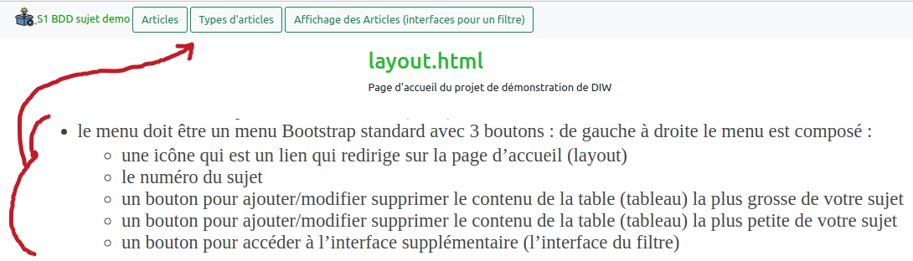
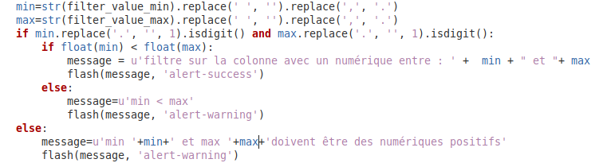

Faire attention que les contenus des pages affichées soient
valides sur W3C
Respecter les consignes suivantes (surtout typographique) :
les noms des fonctions (méthodes) dans
l’application doivent porter le nom de l’opération puis le nom de la
table ; utiliser du snake_case : show_nom_table add_nom_table
valid_add_nom_table delete_nom_table edit_nom_table valid_edit_nom_table
…
les routes doivent porter le nom de la table
puis le nom de l’opération ( en kebab-case (appellé aussi spinal case)) : /nom-table/show/nom-table/edit/nom-table/add …
créer dans le dossier templates un dossier de
vue qui porte le nom de la table (utiliser du
snake_case) : les noms sont indiqués dans chaque
sujet
mettre aux fichiers des vues des noms de la
forme (add_table.htmledit_table.htmlshow_table.html)
les noms des champs input(name) doivent porter
le nom des clés (attribut) des dictionnaires que vous utilisez
ATTENTION : les clés dans tous les tableaux Python de dictionnaires
sont en CamelCase, il faut respecter cette notation.
La seule clé en snake_case est la clé étrangère
Le contenu des dictionnaires n’est pas modifié (pénalité
importante dans le cas contraire).
Toutes les valeurs du formulaire des champs INPUT doivent être
affichées dans le messages “flash” lors de la soumission du
formulaire.
Utilisez uniquement les fonctions
request, render_template, redirect, flash de l’objet
Flask dans le fichier app.py
Il faut utiliser le framework CSS Bootstrap en local (dans le
dossier static) et non avec des CDN
Remplacer table par les 2 noms des tables de votre
sujet
ATTENTION : on ne doit pas retrouver le mot
article dans votre code
L’affichage des 2 tableaux “Python” doit être sous forme de
tableaux pour afficher/ajouter/supprimer/modifier (CRUD
back-office)
Les 2 tableaux sources en Python ne sont jamais
modifiés
Les noms des champs INPUT dans les formulaires doivent porter le nom
des clés des tableaux python
Lors de la modification d’un enregistrement, afficher le contenu de
l’enregistrement (la ligne sélectionnée) dans les champs INPUT du
formulaire.
ATTENTION : utiliser le code vu en cours, l’utilisation d’une IA
générative pour produire un code non conforme au TP vu en cours
entraînera une grosse pénalité.
Une pénalité importante sera appliquée si les règles suivantes ne
sont pas respectées :
Pas de boucle Python dans le fichier app.py (par exemple
avec le mot-clé next ou for).
Pas d’utilisation des mots-clés with et
try en Python (gestion des exceptions).
Pas d’utilisation de la fonction url_for pour gérer une
route.
Pas d’utilisation de route paramétrée /route/<id>
à la place des routes avec paramètres GET /route?id=
(paramètres de requête).
Pas d’utilisation de JavaScript.
Pas d’utilisation de module Python non vu en TP.
Pas d’utilisation de code que vous ne maîtrisez
pas
Ne pas utiliser l’attribut “required” dans tous les champs INPUT.
Utilisez le uniquement pour les clés étrangères et le champ “nom”(ou
libellé) de l’enregistrement le plus important qui permet d’identifier
l’enregistrement.
Ne pas utiliser “request.method” dans le fichier app.py.
Ne pas utiliser de condition “SI” (“IF”) dans le fichier
app.py.
Étapes
et exemples de vues (consignes CSS et BootStrap)
ajouter un “favicon” pour toutes les pages (layout)
corps des pages :
utiliser un “container” pour définir les marges de chaque page
Menu
Faire un menu identique à celui ci-dessous

utiliser Bootstrap pour créer le
menu
c’est le même menu pour toutes les routes (URL) : c’est le même menu
dans toutes les pages
le menu doit être un menu Bootstrap standard avec 3 boutons : de
gauche à droite le menu est composé :
une icône qui est un lien qui redirige sur la page d’accueil
(layout)
le numéro du sujet
un bouton pour ajouter/modifier supprimer le contenu de la table
(tableau) la plus grosse de votre sujet
un bouton pour ajouter/modifier supprimer le contenu de la table
(tableau) la plus petite de votre sujet
un bouton pour accéder à l’interface supplémentaire (l’interface du
filtre)
affichage des deux
tableaux de dictionnaires
afficher le contenu des 2 dictionnaires (tables) avec les 2 routes
/table/show et table2/show
affichage de la grosse table :
utiliser un tableau Bootstrap,
utiliser une classe pour mettre en rouge l’identifiant qui fait
référence à l’identifiant de l’autre table (cette valeur est un
numérique).
formulaires
créer 2 formulaires (un pour ajouter un enregistrement sur la route
/table/add et un pour modifier un enregistrement sur la
route /table/edit). Créer ces 2 formulaires pour chacune
des 2 tables.
attention : les noms des champs INPUT (attribut NAME)
doivent porter le nom des clés (attribut) des
dictionnaires
Consignes CSS (styles) :
les formulaires doivent respecter les consignes suivantes :
utiliser les classes Bootstrap,
mettre l’arrière-plan de la liste déroulante de couleur “jaune”
Définir uniquement le champ INPUT principal et la
liste déroulante comme requis dans le formulaire de la
grosse table
Définir uniquement le champ INPUT principal comme
requis dans le formulaire de la petite table
Définir le champ INPUT avec une date de type “date”
Définir le champ INPUT avec des numériques de type numérique
(“number”)
Définir le champ INPUT pour l’image avec un INPUT type texte (éviter
d’utiliser “file”)
laisser une marge à gauche et à droite pour chaque formulaire
dans le formulaire
les champs requis invalides ont un arrière plan
gris
les listes déroulantes ont un arrière plan
jaune
ergonomie :
imposer de sélectionner une valeur dans la liste déroulante,
imposer de saisir un contenu du champ principal (attribut) du
dictionnaire (c’est le premier mot après Filtre : texte
dans votre sujet )
utiliser une route et une variable (identifiant passé en méthode
GET) pour effectuer une opération (ajouter/modifier/supprimer) sur une
ligne du tableau (sinon pénalité, pas de route du type
/table/add/<id> souvent proposée par les IA
génératives)
utiliser la méthode POST pour valider un formulaire et une route
(attribut “action” du formulaire) de nom /table/add ou
/table/edit selon l’opération
messages “flash”
après une opération comme “ajouter”, “modifier” ou “supprimer”,
afficher un message dit “flash” avec les informations du formulaire lors
d’une création, d’une modification ou d’une suppression d’un
article
afficher dans l’ordre : l’opération effectuée, le nom principal de
la table, l’identifiant de la clé étrangère (qui fait référence à
l’identifiant de l’autre table (clé primaire)), les autres valeurs des
champs (INPUT) et en dernier si l’opération est ‘modifier’ ou
‘supprimer’ l’identifiant de la ligne (dictionnaire du tableau)
exemple
Interfaces
supplémentaires (interface d’un filtre)
l’interface supplémentaire (interface pour le filtre) doit utiliser
la classe “cards” de Bootstrap et le plus possible les classes Bootstrap
( pour les formulaires etc ….)
Afficher les 2 contenus des 2 tables dans la même vue :
afficher la seconde table dans le formulaire (cases à cocher)
afficher les éléments de la première table sous forme de card sur 3 colonnes (3 “cards” par ligne)
Formulaire :
afficher les éléments de la seconde table (la plus petite) sous
forme de “toggle” (cases à cocher),
afficher des champs INPUT pour filtrer un numérique de la table (la
plus grosse) de votre sujet ainsi qu’un champ texte pour saisir une
chaîne de texte.
si on valide le formulaire, afficher des messages “flash” avec les
cases “cochées” (id de la petite table) et le contenu des champs INPUT
si ils sont corrects sinon afficher un message d’erreur
fonctionnement du filtre
Le filtre n’est pas fonctionnel. Seul l’affichage du contenu des 2
tableaux (python) est à réaliser, ainsi que l’affichage du contenu du
formulaire dans des messages “flash”. Tester sur http://amillet1.pythonanywhere.com/article/filtre
exemple avec les articles
Exemple de code pour afficher le contenu du filtre
exemple de code pour afficher les
éléments du formulaire filtre si on valide le formulaire
Pour comparer des réels c’est un peu plus compliqué

modification à ajouter pour tester des
réels (il faut adapter ce code)
Barème d’évaluation
ANNEXE
script de test du projet :
Un premier script extrait les archives
.tar.gz et .zip, ce script recherche un
dossier et copie un autre script test_projet.sh dans le
dossier. Le script test_projet.sh se trouve au même niveau
que le fichier app.py (une erreur est signalée dans le cas
contraire).
script de test :
#!/bin/bash
clear
echo -e "\033[0;32m \n**** listes des fonctions(snake_case: show_nom_table add_nom_table valid_add_nom_table delete_nom_table edit_nom_table valid_edit_nom_table) :"
grep "def " app.py | uniq -c
echo -e "\033[0;32m \n**** listes des fichiers (snake_case: add_table.html edit_table.html show_table.html) : "
ls templates/*
echo -e "\033[0;31m \n***** listes des routes (spinal case : /nom-table/show /nom-table/edit /nom-table/add ) \033[0m"
grep "@app.route" app.py
echo -e "\033[0;32m \n**** listes des paramètres POST (CamelCase : clés des dictionnaires, sauf la clé étrangére) :"
grep "request.form.get" app.py | uniq -c
echo -e " \033[0m"
code app.py &
killall python3
flask --debug --app app run --host 0.0.0.0